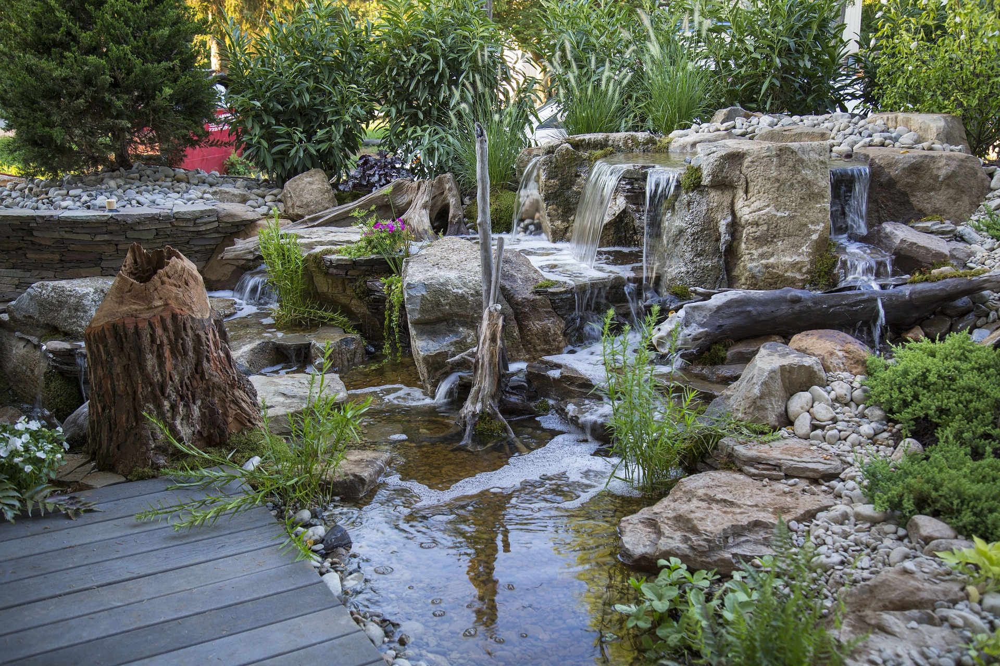

Projektowanie
- ogrodów przydomowych
- terenów zieleni osiedlowej
- zieleni przy budynkach użyteczności publicznej
- ogrodów na dachach
- parków
Urządzanie i wykonanie
- ogrodów, parków, skwerów i innych terenów zieleni
- nawierzchni z kostki brukowej i kamienia naturalnego
- prac ziemnych
Pielęgnacja i konserwacja
- przycinanie drzew, krzewów i żywopłotów
- przesadzanie drzew
- rekultywacja i koszenie trawników
- opryski i nawożenie
Rewaloryzacja zabytkowych założeń parkowych i ogrodowych
- projektowanie
- wykonawstwo
- konserwacja
Aranżacje wodne
- instalacje wodne
- baseny
- fontanny
- oczka wodne
- systemy nawadniania
Mała architektura
- altany
- pergole
- tarasy
- place zabaw
O M N I E
Nazywam się Paweł Smereczyński. Jestem dyplomowanym architektem krajobrazu, absolwentem Wydziału Ogrodniczego SGGW w Warszawie. Moje, ponad 30-letnie, profesjonalne doświadczenie w kształtowaniu zieleni ma swe początki w połowie lat 80-tych. Zajmowałem się wówczas konserwacją starych drzewostanów w zabytkowych parkach w Opinogórze, w Oborach czy na Cmentarzu Powązkowskim w Warszawie. W 1991 roku założyłem firmę "Pracownia Architektury Krajobrazu Park - mgr inż. arch. kraj. Paweł Smereczyński". Od tego czasu z powodzeniem przeprowadziłem setki realizacji, w tym ogrody prywatne, otoczenia wokół osiedli mieszkalnych, siedzib firm czy instytucji państwowych. Służę Państwu swoim doświadczeniem i zapraszam do współpracy.

